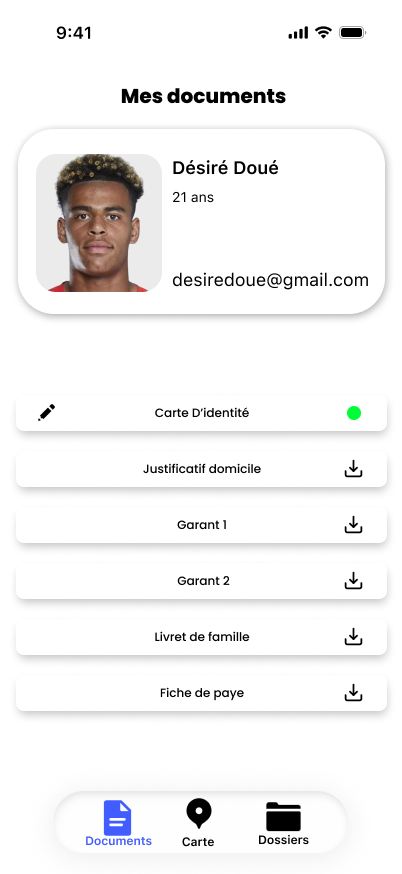
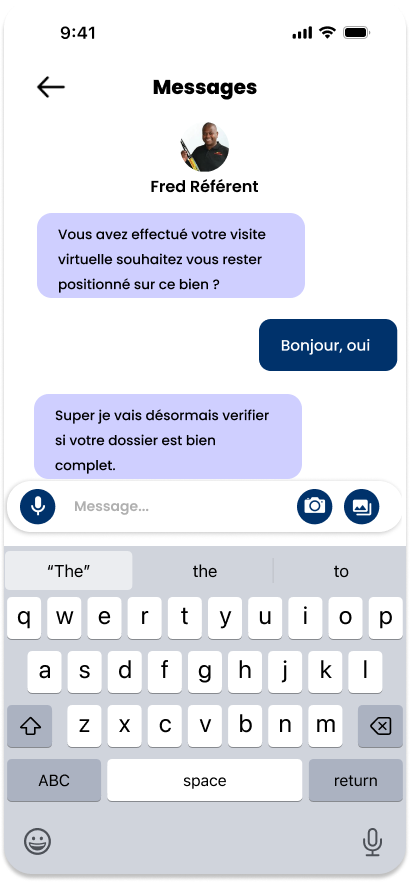

Dans le cadre d’un projet de conception centré sur l’humain, nous nous sommes intéressés aux problématiques liées à l’accès au logement pour les personnes vivant en Outre-Mer et souhaitant s’installer en France métropolitaine. Au cours de nos recherches, nous avons constaté que ces personnes rencontrent de nombreuses difficultés dans leurs démarches, notamment en raison de la distance géographique, de la méconnaissance du marché immobilier métropolitain et de la complexité des procédures administratives. Afin de répondre à ce besoin, nous avons imaginé une solution numérique permettant d’accompagner les futurs arrivants dans leur recherche de logement. Cette plateforme met en relation un demandeur, vivant en Outre-Mer, et un référent présent en métropole chargé de l’aider dans ses démarches. L’objectif est de simplifier l’accès au logement grâce à des fonctionnalités telles que la consultation des offres sur une carte interactive, les visites virtuelles, le suivi des étapes administratives, la transmission sécurisée des documents via un coffre-fort numérique et la communication directe avec un référent. Notre solution vise à offrir un accompagnement personnalisé, à réduire les obstacles liés à la distance et à faciliter l’installation des bénéficiaires en métropole. À travers ce projet, nous cherchons à proposer une expérience plus humaine, accessible et rassurante pour les personnes contraintes d’organiser leur déménagement à plusieurs milliers de kilomètres de leur futur lieu de vie.


Rentrez en contact avec un garant disposant d’une situation financière robuste et répondant pleinement aux critères de solvabilité attendus

Conforme au RGPD, notre plateforme garantit une protection fiable, transparente et responsable de vos données personnelles.

Disponible 24h/24, nos référents son reconnus pour leur sens de l'écoute, leur réactivité et leur intégrité, des qualités humaines qui garantissent un accompagnement de qualité à chaque étape.

